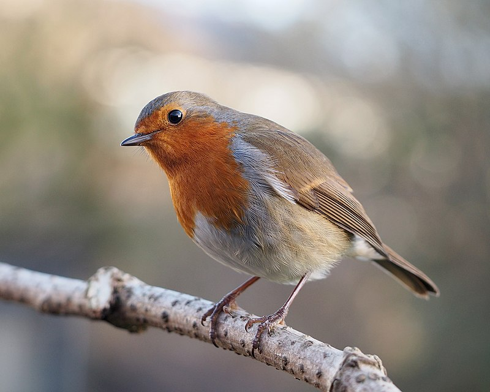

The oldest recorded American Robin was 13 years and 11 months old.
Robin have about 2,900 feathers and the robin song sounds like "cheer-up, cheerily, cheer-up, cheer-up, cheerily".
Robins eat a lot of fruit in fall and winter. When they eat honeysuckle berries exclusively, they sometimes become intoxicated.
